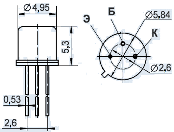
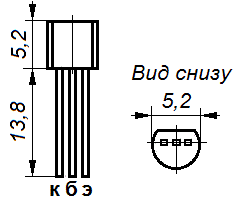

Транзистор КТ313
Транзисторы КТ313 кремниевые, эпитаксиально-планарные структуры p-n-p универсальные. Предназначены для применения в усилителях высокой частоты и переключающих устройствах. Выпускаются в металло-стеклянном (корпус КТ-1-7 (TO-18)) и пласстмассовом корпусах с гибкими выводами. Масса транзистора не более 0,5 г.
Технические условия - аА0.336.131ТУ.
Импортный аналог: 2N2906, 2N2906, 2N2906A, 2SA530, MM1614, MM2614.


Рис. 1 - Цоколевка и размеры транзисторов КТ313 (слева) и КТ313АМ (справа)
Таблица 1
| Параметр | КТ313А | КТ313Б | КТ313АМ | КТ313БМ |
|---|---|---|---|---|
| Максимально допустимое (импульсное) напряжение коллектор-база Uкбо max (Uкбо и), В |
60 | 60 | 60 | 60 |
| Максимально допустимое (импульсное) напряжение коллектор-эмиттер Uкэо max (Uкэои), В |
60 | 60 | 60 | 60 |
| Максимально допустимый постоянный ток коллектора Iк max, мА | 350 | 350 | 350 | 350 |
| Максимально допустимый импульсный ток коллектора Iк max и, мА | 700 | 700 | 700 | 700 |
| Максимально допустимая постоянная рассеиваемая мощность коллектора без теплоотвода Pк max, Вт | ||||
| Максимально допустимая постоянная рассеиваемая мощность коллектора с теплоотводомPк max т, Вт | 0,3 | 0,3 | 0.3 | 0.3 |
| Статический коэффициент передачи тока биполярного транзистора в схеме ОЭ h21э | 30-120 | 80-300 | 30-120 | 80-300 |
| Обратный ток коллектора Iкбо, мкА | ≤0,5 | ≤0,5 | ≤0,5 | ≤0,5 |
| Граничная частота коэффициента передачи тока в схеме ОЭ fгр, МГц | 200 | 200 | 200 | 200 |